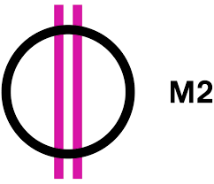
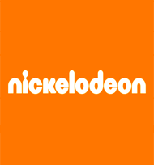
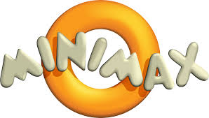

Az m2 magyarországi tévécsatorna, mely eredeti - kultúrát és a hagyományokat előtérbe helyező - műsorszerkezetébe egyre több gyerekeknek szóló, ifjúsági program került, majd 2012 decemberétől gyerekcsatornává vált. A közmédia átalakított csatornáján erőszakmentes, családbarát, szórakoztató és értékteremtő tartalmak várják a kicsiket, szüleiket, nagyszüleiket.

A Nickelodeon előfizetéssel rendelkezők élőszereplős és animációs sorozatokat is láthatnak a csatornán, amely a fiatalokat, valamint a kisgyerekeket igyekszik a tévé képernyője elé ültetni világhírű műsoraival, mint például a méltán népszerű Spongyabob vagy az iCarly. A Nickelodeon sorozatai bejárták a világot, és szinte mindenhol törtetlen a csatorna és műsorainak népszerűsége.

A Minimax a színvonalas szórakoztatás mellett hangsúlyt fektet a gyerekek tanítására és újdonságokkal való megismertetésére. Humoros, illetve tanulságos történetek és animációk teszik sokszínűvé a programkínálatot.